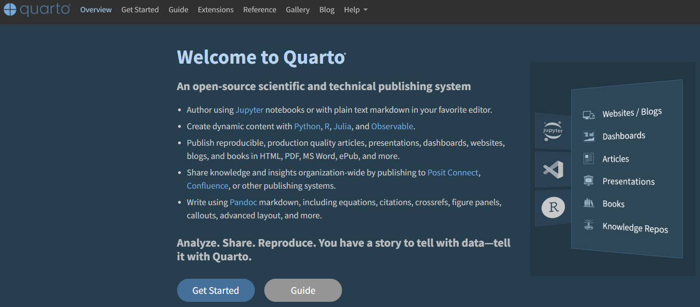

源氏物語（若紫）
源氏物語について
源氏物語は10世紀終わりから11世紀の初めに、紫式部によって書かれたとされる大長編の小説です。光源氏（光の君と呼ばれる、臣籍降下した皇族（源氏））を主人公とし、その出生から出家までの恋愛遍歴と生涯、源氏の死後の子孫（薫君、匂宮）の恋愛遍歴を54帖の物語として記したものです。源氏の死後の物語は宇治十帖と呼ばれます。
 源氏が末摘花を訪ねる場面。
源氏が末摘花を訪ねる場面。光源氏に関する物語は基本的にはスーパー権力者 兼 色男である光源氏が女性と知り合っては和歌を取り交わし、（現代人から見るとあんまり大変そうには見えないことで）思い悩む話として進んでいきます。11世紀当時の感覚で書かれているため、現代人からすると倫理的に不可思議であったり、大したことがなさそうなことで思い悩んだりしていますが、当時の時代観を学ぶのにとてもよく、小説としても面白く、ちりばめられた和歌はすぐれている、現代から見ても超大作と言えると思います。
日本の文学に大きな影響を与えた作品であることは間違いなく、子女の教育に、娯楽にと長く楽しまれてきた物語です。源氏物語が紫式部の書いたオリジナルの雰囲気を今でも色濃く遺しているのか、写本を作る度に写本の作者によって徐々に洗練されていったのか、今となってはよくわかりませんが（オデュッセイアやイーリアスのような、吟遊詩人が語り継いだ物語はおそらく大本が分からないぐらいに推敲されているはずです）、現代においても様々な翻訳が行われていることからも、少しずつ形を変え、洗練され、我々の手元まで届いたのだと思っています。
 与謝野晶子訳 源氏物語（上）角川文庫
与謝野晶子訳 源氏物語（上）角川文庫
源氏物語の現代語訳はたくさんの作家により何度も行われており、有名どころでは与謝野晶子、谷崎潤一郎、かなり意訳ですが田辺聖子、瀬戸内寂聴、角田光代などの現代語訳を楽しむことができます。私は田辺聖子訳の新源氏物語を30年ほど前に読んだのですが、宇治十帖まで入れて単行本5巻で、読みやすかった印象があります。私本・源氏物語というパロディみたいなものも書かれているので、興味を持たれたら手に取ってみるとよいでしょう。

また、漫画としてはあさきゆめみしが漫画の古典として有名です。最近では紫式部が源氏物語を書いている様子を漫画にした、神作家・紫式部のありえない日々というものも書かれていたり、大河ドラマに紫式部が選ばれたり、小説、漫画、ドラマなど、これからも日本文化の中心でいろいろと取り扱われる作品として、更に語り継がれていくのでしょう。
青空文庫について
この文は、Quartoで文学作品・文芸作品を表示することを試み、Quartoで作成した本の例として提示するために作成しています。このQuartoの文で取り上げるのは、著作権が切れている与謝野晶子訳の源氏物語です。与謝野晶子訳の源氏物語は青空文庫で全文公開されており、図書館に行かずとも現代語で読める源氏物語として非常によいサービスを提供していただいているものです。青空文庫は著作権が切れた小説をボランティアが校正し、オンラインで提供しているもので、ありがたいことに複製・再配布・共有してよいとされています。Creative commonsとしてはCC BY-NC 4.0に従うこととされており、共有・改変する場合にはCC-BY-NC 4.0の表示が必要となります。青空文庫は広告収入・基金・助成金で運営されており、寄附も募集されています。文学作品を青空文庫で読んだ際には寄附することを考えてみてもよいでしょう。
Quartoについて
Quartoはアメリカのデータサイエンス企業である、Positが開発、公開しているドキュメント作成のためのツールです。2022年頃から開発が始められ、Python、Rなどのプログラミング言語と共に広く用いられています。この文書もQuartoで作成しています。
Quartoで作成した本はGithub PagesやQuarto Pub、netlifyなどのサービスで無料でオンラインに公開することができます。この文はQuarto Pubで公開しています。
興味のある方はQuartoのGuideを一読されることをおすすめいたします。
 Quarto
この本に記載している追記内容について
青空文庫の原文から追記されている部分（各ページの表題や注釈、画像など）は、私が単に感想として書いているだけのもので、真実でもなければ重要でもありません。Quartoの機能を示すために用いているだけのものです。追記内容はあまり気にせず、青空文庫の原文や角川の文庫本を読んでいただければと思います。